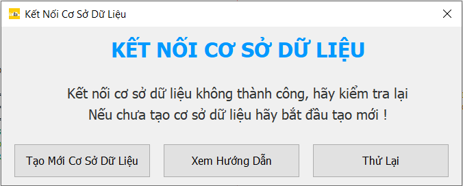
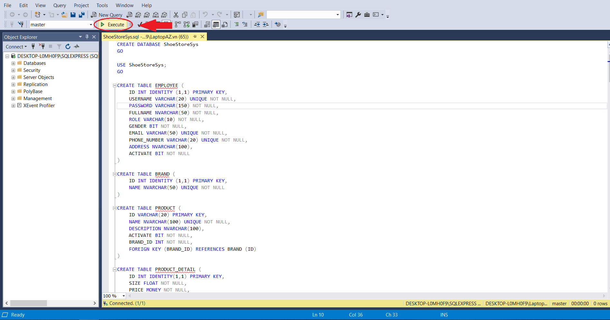
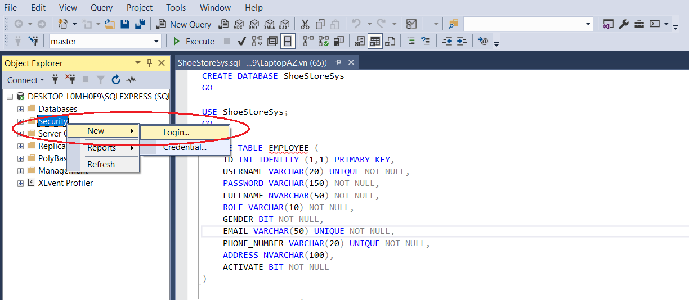
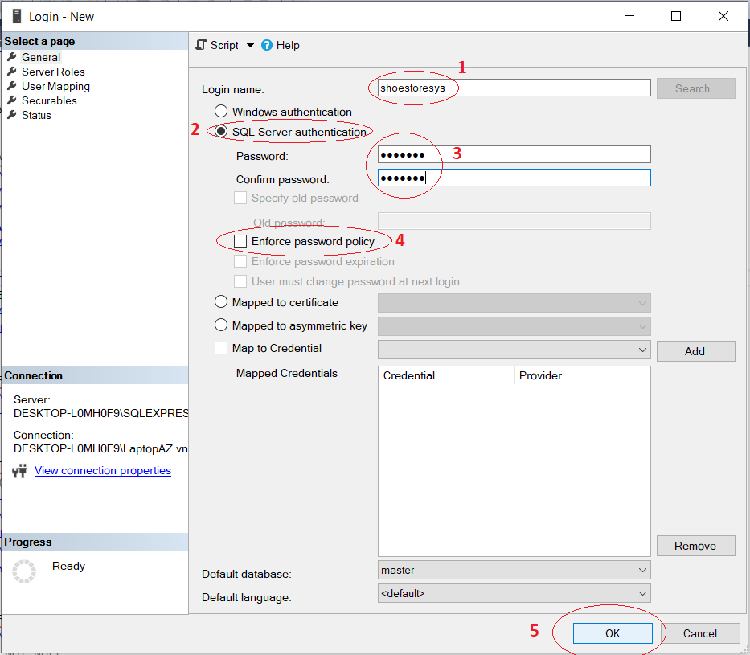
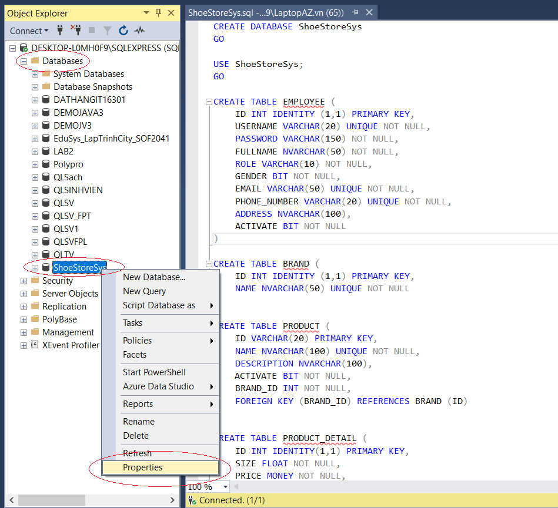
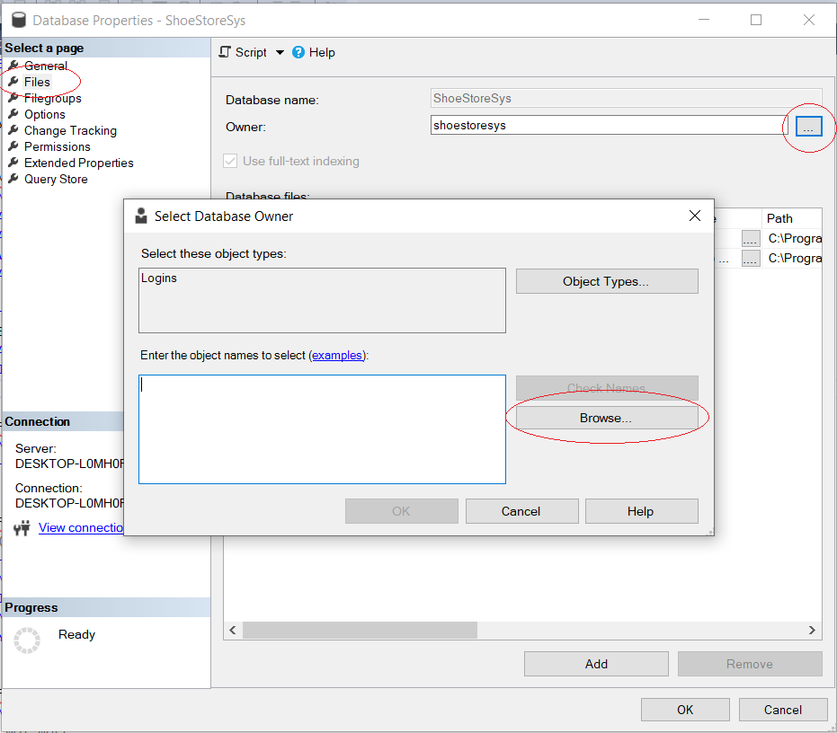
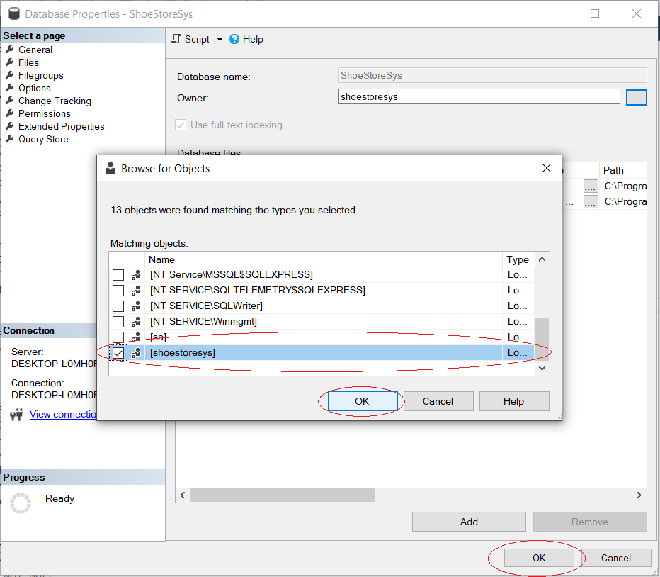

HƯỚNG DẪN KẾT NỐI SQL CHO SHOESTORESYS
B1: Sau khi download và hoàn thành cài đặt ShoeStoreSys, chạy ứng dụng "Shoe Store Management System", chọn "Tạo Mới Cơ Sở Dữ Liệu" để bắt đầu tạo và kết nối cơ sở dữ liệu với SQL
B2: Sau đó chọn "Excute"
B3: Sau khi excute thành công, ấn chuột phải mục "Security", chọn "New" sau đó chọn "Login..."
B4: Trong cửa sổ "Login - New" nhập Login name là: shoestoresys, chọn "SQL Server authentication", nhập Password và Confirm password là: matkhau, bỏ chọn ô "Enforce password policy" sau đó ấn "OK" theo thứ tự như trong hình
B5: Sau khi tạo login mới, chọn Database, ấn chuột phải vào database có tên ShoeStoreSys và chọn "Properties"
B6: Trong cửa sổ "Properties" chọn "Files", ấn nút "..." sau đó chọn "Browse..."
B7: Tìm và tích vào ô có tên "shoestoresys" sau đó ấn "OK" để hoàn thành và chạy lại ứng dụng
